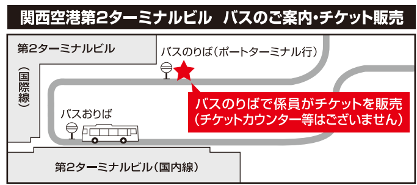
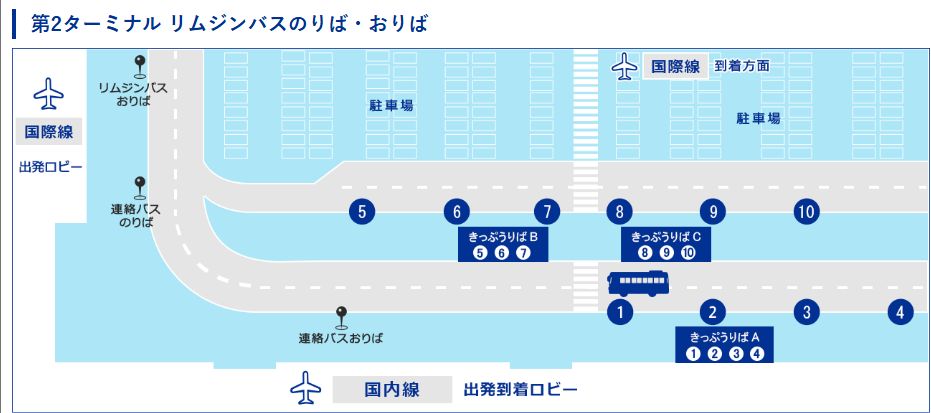

📅 1日目：6月26日（金） 出発・神戸へ
🚆 空港への移動
16:53手稲駅 発（ゆせたゆ乗車）
17:05札幌駅 着
17:11札幌駅 発（♡あきたゆ♡合流）
17:50新千歳空港駅 着
✈️ フライト
Peach MM118便
19:10 新千歳空港(CTS) 発 ➡ 21:30 関西国際空港(KIX) 着
🔀 関空到着後の条件分岐
飛行機の到着状況に合わせて、以下のいずれかのルートを選択します。
🟢 パターンA：21:50発の連絡バスに間に合う場合（おすすめ）
第2ターミナル連絡バスのりばからバスに乗車し、ベイシャトルで神戸空港へ向かいます。
バスのりば位置確認：

21:50第2ターミナル連絡バス 発 ➡ (約10分) ➡ 関西空港桟橋 着
22:00関西空港桟橋 発 ➡ (ベイシャトル) ➡ 22:31神戸空港 着
💡 チケット予約：バスに乗れると分かった時点で、スマホから急いで予約！
ベイシャトルを予約する
※クーポンコード U1325 入力で、U25応援割が適用され運賃が 1,880円 ➡ 1,000円 になります！
🚆 神戸空港からのポートライナー（三宮行）時刻表＆到着予想
※神戸空港駅から三宮駅までは所要時間 19分 です。
| 神戸空港駅 発 |
三宮駅 到着予想 |
| 22:38 [普通] | 22:57 |
| 22:52 [普通] | 23:11 |
| 23:08 [普通] | 23:27 |
| 23:22 [普通] | 23:41 |
| 23:45 [普通] | 24:04 |
🟡 パターンB：飛行機遅延などで連絡バスに間に合わない場合
21:57発の高速リムジンバスで直接、神戸三宮へ向かいます。
運賃：2,200円 ／ のりば：④番のりば
のりば・切符売り場確認：

21:57関空第2ターミナル ④番のりば発 ➡ 高速バス ➡ 神戸三宮 着
🏨 1日目の宿泊先
📍 1日目のホテル（Google Maps）
🌙 夜の予定：
チェックイン後、時間と体力があればホテルの目の前にあるラウンドワンへ！最近ハマっているUFOキャッチャーで遊びましょう！🕹️